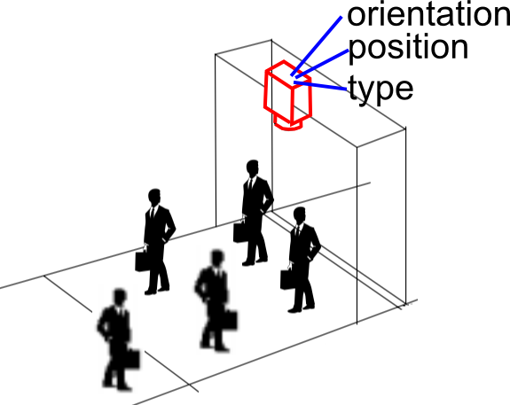

Project: People Counting System
Description
A people counter is a device that can be used to measure the number and direction of people traversing a certain passage or entrance.
USE CASES- Shopping Malls : Shopping centers use people counters to measure the number of visitors. People counters also assist in measuring the areas of 'hot spots', where statistics gathered by people counters are often used to justify rental rates
- Smart Office buildings : Commercial buildings utilize people counters to measure the use of different parts of the building at different times. This information can then be used to intelligently optimize the energy usage in the building (e.g. air conditioning needs, etc.), Also in case of fire hazards, the system can be used to approximate the number of people still stuck inside the office.
- Stadiums and Concert Halls : SThere are often large traffic flows before and after an event. People counters are used to measure the traffic flows of previous events, and the traffic patterns are used to improve traffic flow, particularly when entering and exiting.
- Museums and Libraries : Many non-profit organizations use visitor counts as evidence when making applications for finance, for use when planning for seasonal staffing, and other strategic operational decisions. In cases where tickets are not sold, such as in museums and libraries, counting is either automated, or staff keep a log of how many clients use different services.
Overview

We position an IP camera in such a way that we get an overview of the entrance from where people enter or exit the building. Since we access the IP camera over the network we get a stream of images every second. We run our algorithm on these frames to continuously detect people and monitor whether they cross a virtual line based on which we increment or decrement the count of people present in the building.
We have implemented this system in C++ as well as in python using openCV 3.1
- OpenCV 3.1, Windows 10, Microsoft Visual Studio 2015 and an IP Camera.
- OpenCV 3.1, Ubuntu 16.04, Python 2.7 and an IP camera.
Note: IP Camera can only be accessed if you are connected to winlab wifi
Project Demo
Click the link below to check out the web application for this project:
Web applicationTeam

VISHALSINGH HAJERI
Department of Electrical and Computer
Research Interests: Computer Vision, IoT, Algorithms

JUNJIE FENG
Department of Electrical and Computer
Research Interests: Computer Vision, Graphs, Operating System